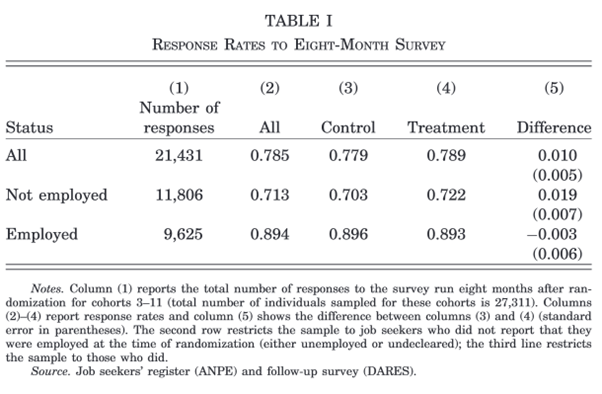
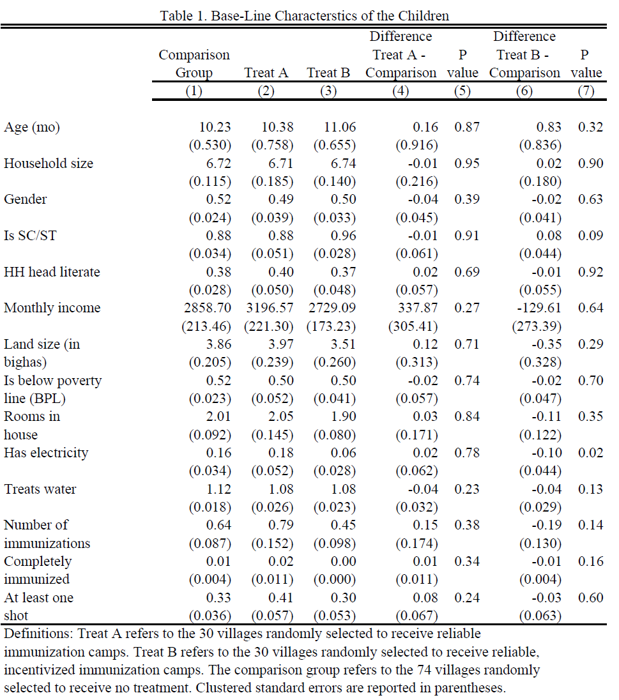
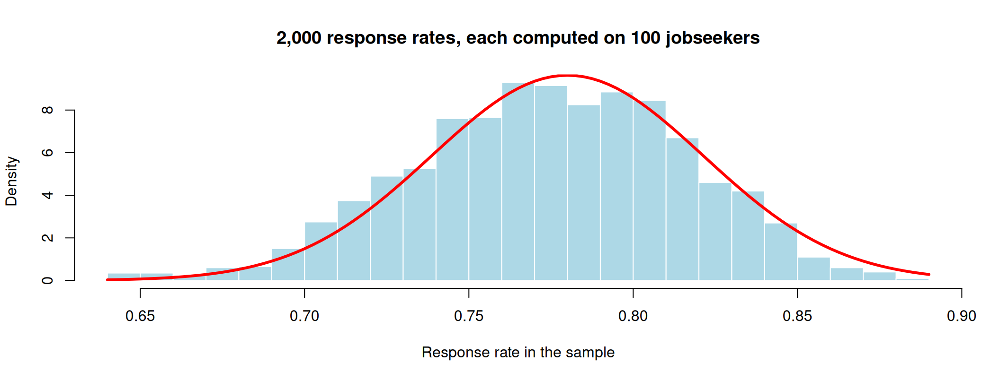
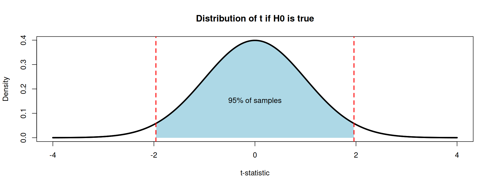
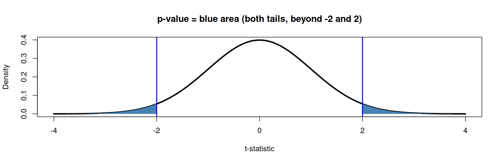

se <- sqrt(0.779 * (1 - 0.779) / 11952 + 0.789 * (1 - 0.789) / 15406)
se[1] 0.005020987Tutorial #2
Department of Economics, SciencesPo
Crépon et al. (2013) evaluate a new support program for French jobseekers to help them find employment. They use administrative data from the French Public Employment Services and a follow-up survey of jobseekers carried out by the DARES. Table 1 of their paper presents the response rates for 15,406 jobseekers who benefited from support (treatment) and 11,952 who did not (control), and the difference between the two.

Question
Why do they combine administrative data and a survey? What are their potential limitations?
Question
Why are response rates to the survey important? Why do they compute the difference in response rates between treatment and control?
Question
Write and implement the formula for the standard error of the difference in means in the first row and check it against the value in the table.
Use the formula seen in class:
\[SE\left(\widehat{Y_1 - Y_2}\right) = \sqrt{\frac{V(Y_1)}{n_1} + \frac{V(Y_2)}{n_2}}\]
And for a binary variable:
\[S^2(Y_i) = \overline{Y_i}\times (1-\overline{Y_i})\]
In R:
Questions
\[t = \frac{\overline{Y_1} - \overline{Y_0}}{SE\left(\widehat{Y_1 - Y_0}\right)}\approx \frac{0.010}{0.005}=2>1.96\]
The difference is thus statistically different from 0 at the 5% significance level.
In R:
This table is taken from Banerjee et al. (2010), who evaluate ways to improve immunization rates in rural India. The evaluation compares villages that benefit from regular immunization camps and incentives for parents to bring their children (Treatment B) with villages that only have regular immunization camps (Treatment A) and with villages that do not get any intervention (Comparison group). In Table 1 of the paper they compare these villages at baseline (before any intervention).
Question
What are the different columns?

Question
How does one obtain the p-value? Compute the p-value for row 1, column 7 using R.
Reminder: the p-value of a two-tailed t-test is the probability that the t-statistic takes a value at least as extreme as \(t\) under the null hypothesis (under which it follows a Student distribution \(T\) with \(d\) degrees of freedom): \(\text{p-value} = P\left(|T|>|t|\right)\). Most often, we can use the normal approximation \(T\approx \mathcal{N}(0,1)\).
We compute the t-statistic = difference / standard error, evaluate the standard normal CDF at \(|t|\), and multiply the tail by 2 (two-tailed test):
Question
What is the conclusion one can draw from this table?
The villages are comparable before the start of the intervention, but treatment B villages tend to be slightly poorer.
In their paper, Pons and Liegey (2019) use both administrative and survey data. Download their dataset on Moodle (the same as for Tutorial 1).
Questions
[1] 23836[1] 22944[1] NA 1 0[1] 839Lectures did not cover regressions yet, so we compute each statistic by hand. First variable: region of origin is not France.
## create two datasets for computational ease
treat_group <- df %>% filter(treatment == 1)
control_group <- df %>% filter(treatment == 0)
# means
mean_origin_treat <- mean(treat_group$immigrant == 1, na.rm = TRUE)
mean_origin_control <- mean(control_group$immigrant == 1, na.rm = TRUE)
# standard errors
se_origin_treat <- sd(treat_group$immigrant == 1, na.rm = TRUE) / sqrt(nrow(treat_group))
se_origin_control <- sd(control_group$immigrant == 1, na.rm = TRUE) / sqrt(nrow(control_group))
# difference
diff_origin <- mean_origin_treat - mean_origin_control
# se of the difference (samples are independent)
se_diff_origin <- sqrt(se_origin_treat^2 + se_origin_control^2)
# p-value: by hand, with the normal approximation
t_stat <- diff_origin / se_diff_origin
pval_diff_origin <- 2 * (1 - pnorm(abs(t_stat)))
# p-value: fast (and accurate) way
pval_diff_origin <- t.test(treat_group$immigrant == 1,
control_group$immigrant == 1)$p.valueSecond variable: reporting to be canvassed (survey respondents only).
# build the variable
build <- df %>% filter(surveycomplete == 1)
build$visited <- build$Q9a_visit_activists %in% c(1, 2)
treat_group <- build %>% filter(treatment == 1)
control_group <- build %>% filter(treatment == 0)
# means
mean_canvass_treat <- mean(treat_group$visited, na.rm = TRUE)
mean_canvass_control <- mean(control_group$visited, na.rm = TRUE)
# standard errors
se_canvass_treat <- sd(treat_group$visited, na.rm = TRUE) / sqrt(nrow(treat_group))
se_canvass_control <- sd(control_group$visited, na.rm = TRUE) / sqrt(nrow(control_group))
# difference and its se
diff_canvass <- mean_canvass_treat - mean_canvass_control
se_diff_canvass <- sqrt(se_canvass_treat^2 + se_canvass_control^2)
# p-value
pval_diff_canvass <- t.test(treat_group$visited,
control_group$visited)$p.valueThird variable: average budget use is known.
# let's assume nothing about the NAs --> drop them
# (alternatively: check how sensitive the results are if non-respondents
# knew either a lot or none of the budget uses)
treat_group <- treat_group %>% filter(!is.na(Q8_knows_budget))
control_group <- control_group %>% filter(!is.na(Q8_knows_budget))
# means
mean_budget_treat <- mean(treat_group$Q8_knows_budget, na.rm = TRUE)
mean_budget_control <- mean(control_group$Q8_knows_budget, na.rm = TRUE)
# standard errors
se_budget_treat <- sd(treat_group$Q8_knows_budget, na.rm = TRUE) / sqrt(nrow(treat_group))
se_budget_control <- sd(control_group$Q8_knows_budget, na.rm = TRUE) / sqrt(nrow(control_group))
# difference and its se
diff_budget <- mean_budget_treat - mean_budget_control
se_diff_budget <- sqrt(se_budget_treat^2 + se_budget_control^2)
# p-value
pval_diff_budget <- t.test(treat_group$Q8_knows_budget,
control_group$Q8_knows_budget)$p.valuefmt_se <- function(x) paste0("(", round(x, 5), ")")
table <- data.frame(
Variable = c("Immigrant", " ",
"Report being canvassed", " ",
"Knowledge budget use", " "),
`Control Group` = c(round(mean_origin_control, 5), fmt_se(se_origin_control),
round(mean_canvass_control, 5), fmt_se(se_canvass_control),
round(mean_budget_control, 5), fmt_se(se_budget_control)),
`Treatment Group` = c(round(mean_origin_treat, 5), fmt_se(se_origin_treat),
round(mean_canvass_treat, 5), fmt_se(se_canvass_treat),
round(mean_budget_treat, 5), fmt_se(se_budget_treat)),
Difference = c(round(diff_origin, 5), fmt_se(se_diff_origin),
round(diff_canvass, 5), fmt_se(se_diff_canvass),
round(diff_budget, 5), fmt_se(se_diff_budget)),
`p-value` = c(round(pval_diff_origin, 3), " ",
round(pval_diff_canvass, 3), " ",
round(pval_diff_budget, 3), " "),
check.names = FALSE
)
kable(table, format = "html", align = "lcccc")| Variable | Control Group | Treatment Group | Difference | p-value |
|---|---|---|---|---|
| Immigrant | 0.21947 | 0.23018 | 0.01071 | 0.048 |
| (0.00373) | (0.00392) | (0.00541) | ||
| Report being canvassed | 0.14849 | 0.30392 | 0.15543 | 0 |
| (0.01715) | (0.0228) | (0.02853) | ||
| Knowledge budget use | 0.41763 | 0.42079 | 0.00316 | 0.947 |
| (0.03275) | (0.0342) | (0.04736) |
Create the variables once, then use group_by() + summarise():
df_bal <- df %>%
mutate(
visited = ifelse(surveycomplete == 1,
Q9a_visit_activists %in% c(1, 2), NA),
origin = immigrant == 1,
budget_use = Q8_knows_budget,
treatment = ifelse(treatment == 1, "Treatment", "Control")
)
## use summarise to compute the necessary values
balance_table <- df_bal %>%
group_by(treatment) %>%
summarise(across(c(origin, visited, budget_use),
list(Mean = ~ mean(., na.rm = TRUE),
SE = ~ sd(., na.rm = TRUE) / sqrt(length(na.omit(.)))))) %>%
ungroup()
balance_table# A tibble: 2 × 7
treatment origin_Mean origin_SE visited_Mean visited_SE budget_use_Mean
<chr> <dbl> <dbl> <dbl> <dbl> <dbl>
1 Control 0.219 0.00373 0.148 0.0171 0.410
2 Treatment 0.230 0.00392 0.304 0.0228 0.415
# ℹ 1 more variable: budget_use_SE <dbl>We now have the summary stats in rows, but we want Variable | Mean control | SE control | Mean treatment | SE treatment.
Pivot to Treatment | Variable | Mean | SD, then pivot again to get the desired layout:
# first pivot: Treatment | Variable | Mean | SD
balance_long <- balance_table %>%
pivot_longer(cols = -treatment,
names_to = c("Variable", ".value"),
names_pattern = "(.*)_(.*)")
# second pivot: Variable | Mean_Control | Mean_Treatment | SD_Control | SD_Treatment
balance_wide <- balance_long %>%
pivot_wider(id_cols = Variable,
names_from = treatment,
values_from = c(Mean, SE))
## add difference, its se and p-values
balance_wide <- balance_wide %>%
mutate(Diff = Mean_Treatment - Mean_Control,
SE_Diff = sqrt(SE_Treatment^2 + SE_Control^2))
balance_wide$pval <- sapply(balance_wide$Variable, function(v) {
t.test(df_bal[[v]][df_bal$treatment == "Treatment"],
df_bal[[v]][df_bal$treatment == "Control"])$p.value
})| Variable | Mean_Control | SE_Control | Mean_Treatment | SE_Treatment | Diff | SE_Diff | pval |
|---|---|---|---|---|---|---|---|
| origin | 0.2195 | 0.0037 | 0.2302 | 0.0039 | 0.0107 | 0.0054 | 0.0479 |
| visited | 0.1485 | 0.0171 | 0.3039 | 0.0228 | 0.1554 | 0.0285 | 0.0000 |
| budget_use | 0.4104 | 0.0322 | 0.4146 | 0.0338 | 0.0042 | 0.0467 | 0.9282 |
In Exercises 1 and 2, we used pnorm() and the threshold 1.96: we assumed that the t-statistic follows a normal distribution.
Question
In Crépon et al. (2013), the outcome is “responded to the survey” (1) or “did not respond” (0). Does this variable follow a normal distribution? Why can we still use pnorm()?
Imagine the survey is sent to 100 jobseekers, and each of them responds with probability 0.78. The response rate in our sample is:
[1] 0 1 1 1 1 1 1 1 1 1 1 1 1 1 0 0 1 1 0 1[1] 0.8Let us repeat the survey 2,000 times and plot the 2,000 response rates:
means <- replicate(2000, mean(rbinom(100, size = 1, prob = 0.78)))
hist(means, breaks = 30, freq = FALSE, col = "lightblue", border = "white",
main = "2,000 response rates, each computed on 100 jobseekers",
xlab = "Response rate in the sample")
curve(dnorm(x, mean = 0.78, sd = sqrt(0.78 * 0.22 / 100)),
add = TRUE, col = "red", lwd = 3)
The answers are 0 or 1, but the means have a bell shape: the red curve is a normal distribution.
Central limit theorem (in words)
If the sample is large enough, the sample mean \(\overline{Y}\) follows approximately a normal distribution, whatever the distribution of \(Y\): \[\overline{Y} \approx \mathcal{N}\left(\mu, \frac{\sigma^2}{n}\right)\]
[1] 0.04161019[1] 0.04142463pnorm() and 1.96.#| '!! shinylive warning !!': |
#| shinylive does not work in self-contained HTML documents.
#| Please set `embed-resources: false` in your metadata.
#| standalone: true
#| viewerHeight: 680
#| components: [viewer]
# ------------------------------------------------------------------
# PAPE - Tutorial 2 - Illustration of the central limit theorem
#
# Run locally with: shiny::runApp("apps/clt")
# The same code is embedded in the slides (shinylive block).
# Only depends on {shiny}: plots use base R graphics.
# ------------------------------------------------------------------
library(shiny)
# Colours (Sciences Po palette)
col_red <- "#d90502"
col_blue <- "#0729a6"
col_grey <- "#818181"
col_fill <- adjustcolor("#0729a6", alpha.f = 0.25)
REPS <- 2000 # number of samples drawn for the sampling distribution
# Populations ---------------------------------------------------------
make_pop <- function(type, p = 0.5) {
switch(type,
skewed = list(
label = "Exponential (right-skewed, like income)",
draw = function(k) rexp(k, rate = 1),
mu = 1, sigma = 1, discrete = FALSE,
dens = function(x) dexp(x, rate = 1),
xlim = c(0, 6)
),
uniform = list(
label = "Uniform on [0, 1]",
draw = function(k) runif(k),
mu = 0.5, sigma = sqrt(1 / 12), discrete = FALSE,
dens = function(x) dunif(x),
xlim = c(-0.2, 1.2)
),
bimodal = list(
label = "Mixture of two normals (bimodal)",
draw = function(k) ifelse(runif(k) < 0.5, -2, 2) + rnorm(k, sd = 0.5),
mu = 0, sigma = sqrt(4.25), discrete = FALSE,
dens = function(x) 0.5 * dnorm(x, -2, 0.5) + 0.5 * dnorm(x, 2, 0.5),
xlim = c(-4, 4)
),
binary = list(
label = sprintf("Bernoulli(p = %.2f), like survey response", p),
draw = function(k) rbinom(k, 1, p),
mu = p, sigma = sqrt(p * (1 - p)), discrete = TRUE,
dens = function(x) ifelse(x == 1, p, 1 - p),
xlim = c(-0.2, 1.2)
)
)
}
# UI --------------------------------------------------------------------
ui <- fluidPage(
tags$style(HTML("
body { font-size: 15px; }
.well { padding: 12px 14px; }
.shiny-input-container { margin-bottom: 10px; }
.radio-inline { margin-right: 6px; }
table.clt-summary { width: 100%; font-size: 14px; }
table.clt-summary td { padding: 2px 4px; }
table.clt-summary td.num { text-align: right; font-weight: 600; }
")),
sidebarLayout(
sidebarPanel(
width = 3,
selectInput("pop", "Population distribution of Y",
choices = c(
"Right-skewed (exponential)" = "skewed",
"Uniform" = "uniform",
"Bimodal" = "bimodal",
"Binary (Bernoulli)" = "binary"
),
selected = "skewed"
),
conditionalPanel(
"input.pop == 'binary'",
sliderInput("p", "P(Y = 1)", min = 0.01, max = 0.99,
value = 0.78, step = 0.01)
),
radioButtons("n", "Sample size n",
choices = c(1, 2, 5, 10, 30, 100, 1000),
selected = 1, inline = TRUE
),
radioButtons("scale", "Plot the sampling distribution of",
choices = c(
"x\u0304 on the population scale" = "pop",
"x\u0304 zoomed in" = "zoom",
"(x\u0304 \u2212 \u03bc) / (\u03c3/\u221an)" = "std"
),
selected = "pop"
),
checkboxInput("normal", "Overlay the normal approximation", TRUE),
actionButton("redraw", "Draw new samples", class = "btn-primary"),
hr(),
uiOutput("summary")
),
mainPanel(
width = 9,
fluidRow(
column(6, plotOutput("pop_plot", height = "250px")),
column(6, plotOutput("sample_plot", height = "250px"))
),
plotOutput("means_plot", height = "370px")
)
)
)
# Server ----------------------------------------------------------------
server <- function(input, output, session) {
sim <- reactive({
input$redraw
pop <- make_pop(input$pop, input$p)
n <- as.integer(input$n)
one <- pop$draw(n)
if (input$pop == "binary") {
# the mean of n Bernoulli draws is Binomial(n, p) / n: fast for any n
means <- rbinom(REPS, n, input$p) / n
} else {
means <- rowMeans(matrix(pop$draw(n * REPS), nrow = REPS))
}
means[1] <- mean(one) # the sample shown top-right is one of the REPS samples
list(pop = pop, n = n, one = one, means = means)
})
# 1. Population ------------------------------------------------------
output$pop_plot <- renderPlot({
pop <- sim()$pop
par(mar = c(4, 4, 3, 1), cex = 1.1)
if (pop$discrete) {
plot(c(0, 1), pop$dens(c(0, 1)), type = "h", lwd = 40, lend = 1,
col = col_fill, xlim = pop$xlim, ylim = c(0, 1), xaxt = "n",
xlab = "Y", ylab = "Probability", main = "Population")
axis(1, at = c(0, 1))
} else {
x <- seq(pop$xlim[1], pop$xlim[2], length.out = 501)
y <- pop$dens(x)
plot(x, y, type = "n", xlab = "Y", ylab = "Density",
ylim = c(0, max(y) * 1.1), main = "Population")
polygon(c(x[1], x, x[length(x)]), c(0, y, 0), col = col_fill, border = col_blue)
}
abline(v = pop$mu, col = col_red, lwd = 2, lty = 2)
mtext(pop$label, side = 3, line = 0.2, cex = 0.85, col = col_grey)
legend("topright", legend = expression(mu), col = col_red,
lty = 2, lwd = 2, bty = "n")
})
# 2. One sample -----------------------------------------------------
output$sample_plot <- renderPlot({
s <- sim(); pop <- s$pop
par(mar = c(4, 4, 3, 1), cex = 1.1)
ttl <- sprintf("One sample of size n = %d", s$n)
if (pop$discrete) {
shares <- c(mean(s$one == 0), mean(s$one == 1))
plot(c(0, 1), shares, type = "h", lwd = 40, lend = 1, col = col_fill,
xlim = pop$xlim, ylim = c(0, 1), xaxt = "n",
xlab = "Y", ylab = "Share of the sample", main = ttl)
axis(1, at = c(0, 1))
} else {
br <- seq(pop$xlim[1], pop$xlim[2], length.out = 31)
x <- pmin(pmax(s$one, pop$xlim[1]), pop$xlim[2])
hist(x, breaks = br, col = col_fill, border = "white",
xlab = "Y", ylab = "Count", main = ttl)
}
abline(v = mean(s$one), col = col_red, lwd = 3)
legend("topright", legend = as.expression(bquote(bar(x) == .(sprintf("%.3f", mean(s$one))))),
col = col_red, lwd = 3, bty = "n")
})
# 3. Sampling distribution of the mean -------------------------------
output$means_plot <- renderPlot({
s <- sim(); pop <- s$pop; n <- s$n
se <- pop$sigma / sqrt(n)
mode <- input$scale
to_display <- if (mode == "std") function(m) (m - pop$mu) / se else identity
v <- to_display(s$means)
xl <- switch(mode,
pop = pop$xlim,
zoom = pop$mu + c(-4.5, 4.5) * se,
std = c(-4.5, 4.5)
)
# histogram breaks
w <- diff(xl) / 60 # target bin width, in display units
if (pop$discrete) {
# sample means only take values k/n: bins must contain the same
# number of grid points, otherwise the histogram looks jagged
w_raw <- if (mode == "std") w * se else w
step <- ceiling(w_raw * n) / n
br <- to_display(seq(-0.5 / n, 1 + 0.5 / n + step, by = step))
} else {
lo <- min(xl[1], v); hi <- max(xl[2], v)
br <- seq(lo, hi + w, by = w)
}
h <- hist(v, breaks = br, plot = FALSE)
sd_display <- if (mode == "std") 1 else se
ymax <- max(h$density, 1 / (sd_display * sqrt(2 * pi))) * 1.1
par(mar = c(4.5, 4, 3, 1), cex = 1.1)
xlab <- if (mode == "std") expression((bar(x) - mu) / (sigma / sqrt(n))) else expression(bar(x))
plot(h, freq = FALSE, xlim = xl, ylim = c(0, ymax), col = col_fill,
border = "white", xlab = xlab, ylab = "Density",
main = sprintf("Distribution of the sample mean across %s samples of size n = %d",
format(REPS, big.mark = ","), n))
if (input$normal) {
if (mode == "std") {
curve(dnorm(x), from = xl[1], to = xl[2], n = 501,
add = TRUE, col = col_red, lwd = 3)
lab <- expression(N(0, 1))
} else {
curve(dnorm(x, pop$mu, se), from = xl[1], to = xl[2], n = 501,
add = TRUE, col = col_red, lwd = 3)
lab <- expression(N(mu, sigma^2 / n))
}
legend("topright", legend = lab, col = col_red, lwd = 3, bty = "n")
}
})
# Summary table ------------------------------------------------------
output$summary <- renderUI({
s <- sim(); pop <- s$pop
se <- pop$sigma / sqrt(s$n)
z <- (s$means - pop$mu) / se
row <- function(lab, sim_val, th_lab) {
tags$tr(tags$td(lab), tags$td(class = "num", sim_val), tags$td(th_lab))
}
tags$table(
class = "clt-summary",
tags$tr(tags$td(tags$b("Across samples")), tags$td(tags$b("Simulated")),
tags$td(tags$b("Theory"))),
row("Mean of x\u0304", sprintf("%.4f", mean(s$means)),
sprintf("\u03bc = %.4f", pop$mu)),
row("SD of x\u0304", sprintf("%.4f", sd(s$means)),
sprintf("\u03c3/\u221an = %.4f", se)),
row("|z| > 1.96", sprintf("%.1f%%", 100 * mean(abs(z) > qnorm(0.975))),
"5% if normal")
)
})
}
shinyApp(ui, server)Back to Table 1 of Crépon et al. (2013): the response rate is 0.789 in the treatment group and 0.779 in the control group.
Question
The difference is 0.010. Does the program really change the response rate, or is this difference just due to chance (the particular jobseekers who happened to be in each group)?
We start from the hypothesis that there is no difference between the two groups in the population:
\[H_0: \text{response rate}_{\text{treatment}} - \text{response rate}_{\text{control}} = 0\]
and ask: are the data compatible with \(H_0\)?
Even if \(H_0\) is true, the difference in our sample will not be exactly 0: as we saw with the CLT, every sample gives a slightly different mean. The question is whether 0.010 is too large to be explained by chance alone.
To judge whether 0.010 is “large”, we compare it to the standard error, which measures how much the difference varies from one sample to the next:
\[t = \frac{\text{difference}}{\text{standard error}} = \frac{0.010}{0.005} \approx 2\]
[1] 1.99164The observed difference is 2 standard errors away from 0.
By the CLT, if \(H_0\) is true, the t-statistic follows a \(\mathcal{N}(0,1)\): in 95% of samples, it falls between \(-1.96\) and \(1.96\).

p-value
The p-value is the probability of finding a t-statistic at least as far from 0 as ours (\(|t| \geq 2\)) if \(H_0\) were true.

If the program had no effect on survey response, we would find a difference this large in only about 5% of samples.
We fix a significance level \(\alpha\) in advance, usually 5%.
Two equivalent rules at 5%: p-value \(< 0.05\) \(\Leftrightarrow\) \(|t| > 1.96\).
Here, \(p \approx 0.046 < 0.05\) (and \(|t| = 2 > 1.96\)): the difference in response rates is significant at 5%.
\(\alpha\) is also the risk we accept: if \(H_0\) is true, we will still reject it in 5% of samples (type I error, or “false positive”).
#| '!! shinylive warning !!': |
#| shinylive does not work in self-contained HTML documents.
#| Please set `embed-resources: false` in your metadata.
#| standalone: true
#| viewerHeight: 680
#| components: [viewer]
# ------------------------------------------------------------------
# PAPE - Tutorial 2 - What is a p-value?
#
# Run locally with: shiny::runApp("apps/pvalue")
# The same code is embedded in the slides (shinylive block).
# Only depends on {shiny}: plots use base R graphics.
#
# Tab 1: the p-value of one test (examples from the tutorial tables)
# Tab 2: p-values across 1,000 replications of an experiment
# Tab 3: multiple testing, e.g. a balance table with K variables
# ------------------------------------------------------------------
library(shiny)
col_red <- "#d90502"
col_blue <- "#0729a6"
col_grey <- "#818181"
col_green <- "#228b22"
a <- function(col, alpha) adjustcolor(col, alpha.f = alpha)
examples <- list(
"Cr\u00e9pon et al. (2013): all jobseekers" = c(0.010, 0.005),
"Cr\u00e9pon et al. (2013): not employed" = c(0.019, 0.007),
"Cr\u00e9pon et al. (2013): employed" = c(-0.003, 0.006),
"Banerjee et al. (2010): age, B vs. C" = c(0.83, 0.836),
"Banerjee et al. (2010): electricity, B vs. C" = c(-0.10, 0.044),
"Custom" = c(NA, NA)
)
p_value <- function(t, sides) {
if (sides == "two") 2 * (1 - pnorm(abs(t))) else 1 - pnorm(t)
}
crit_value <- function(alpha, sides) {
if (sides == "two") qnorm(1 - alpha / 2) else qnorm(1 - alpha)
}
# UI ----------------------------------------------------------------------
alpha_input <- function(id) {
radioButtons(id, "Significance level \u03b1",
choices = c("1%" = 0.01, "5%" = 0.05, "10%" = 0.10),
selected = 0.05, inline = TRUE)
}
ui <- fluidPage(
tags$style(HTML("
body { font-size: 15px; }
.well { padding: 12px 14px; }
.shiny-input-container { margin-bottom: 8px; }
.nav-tabs { margin-bottom: 8px; }
table.pv-summary { width: 100%; font-size: 14px; }
table.pv-summary td { padding: 2px 4px; }
table.pv-summary td.num { text-align: right; font-weight: 600; }
code { font-size: 13px; }
")),
tabsetPanel(
# Tab 1 ---------------------------------------------------------------
tabPanel(
"1. The p-value of one test",
sidebarLayout(
sidebarPanel(
width = 3,
selectInput("example", "Example", choices = names(examples)),
numericInput("est", "Estimated difference", value = 0.010, step = 0.001),
numericInput("se", "Standard error", value = 0.005, min = 0.0001, step = 0.001),
radioButtons("sides", "Alternative hypothesis",
choices = c("Two-sided: \u03c4 \u2260 0" = "two",
"One-sided: \u03c4 > 0" = "one")),
alpha_input("alpha1"),
hr(),
uiOutput("summary1")
),
mainPanel(width = 9, plotOutput("pval_plot", height = "560px"))
)
),
# Tab 2 ---------------------------------------------------------------
tabPanel(
"2. Repeat the experiment 1,000 times",
sidebarLayout(
sidebarPanel(
width = 3,
sliderInput("tau", "True effect \u03c4 (in SD of the outcome)",
min = 0, max = 0.5, value = 0, step = 0.01),
sliderInput("n", "Units per group", min = 20, max = 1000,
value = 100, step = 10),
alpha_input("alpha2"),
actionButton("rerun", "Run 1,000 new experiments", class = "btn-primary"),
hr(),
uiOutput("summary2")
),
mainPanel(
width = 9,
fluidRow(
column(6, plotOutput("p_hist", height = "540px")),
column(6, plotOutput("t_hist", height = "540px"))
)
)
)
),
# Tab 3 ---------------------------------------------------------------
tabPanel(
"3. Many tests at once",
sidebarLayout(
sidebarPanel(
width = 3,
p("A balance table compares treatment and control on K variables.",
"Randomisation worked: there is no true difference for any of them."),
sliderInput("K", "Number of tests K", min = 1, max = 60, value = 28),
alpha_input("alpha3"),
actionButton("redraw", "Draw a new balance table", class = "btn-primary"),
hr(),
uiOutput("summary3")
),
mainPanel(
width = 9,
fluidRow(
column(7, plotOutput("multi_plot", height = "540px")),
column(5, plotOutput("fwer_plot", height = "540px"))
)
)
)
)
)
)
# Server ------------------------------------------------------------------
server <- function(input, output, session) {
# Tab 1: one test ---------------------------------------------------------
observeEvent(input$example, {
v <- examples[[input$example]]
if (!anyNA(v)) {
updateNumericInput(session, "est", value = v[1])
updateNumericInput(session, "se", value = v[2])
}
})
one <- reactive({
req(is.numeric(input$est), is.numeric(input$se), input$se > 0)
alpha <- as.numeric(input$alpha1)
t <- input$est / input$se
list(t = t, p = p_value(t, input$sides), alpha = alpha,
z = crit_value(alpha, input$sides), sides = input$sides)
})
output$pval_plot <- renderPlot({
o <- one()
lim <- max(4.5, abs(o$t) + 0.5)
x <- seq(-lim, lim, length.out = 1001)
f <- dnorm(x)
par(mar = c(4.5, 4, 4, 1), cex = 1.2)
plot(x, f, type = "n", ylim = c(0, 0.48),
xlab = "t-statistic", ylab = "Density",
main = "Distribution of the t-statistic if H0 is true: N(0, 1)")
shade <- function(keep, col) {
if (!any(keep)) return(invisible())
runs <- split(which(keep), cumsum(c(1, diff(which(keep)) != 1)))
for (r in runs) polygon(c(x[r[1]], x[r], x[r[length(r)]]), c(0, f[r], 0),
col = col, border = NA)
}
# rejection region (alpha) and p-value area
in_pval <- if (o$sides == "two") abs(x) >= abs(o$t) else x >= o$t
shade(in_pval, a(col_blue, 0.45))
lines(x, f, lwd = 3)
# rejection region: red band along the x-axis
if (o$sides == "two") {
rect(c(-lim, o$z), 0, c(-o$z, lim), 0.015, col = a(col_red, 0.6), border = NA)
} else {
rect(o$z, 0, lim, 0.015, col = a(col_red, 0.6), border = NA)
}
if (o$sides == "two") {
abline(v = c(-1, 1) * o$z, col = col_red, lwd = 2, lty = 2)
abline(v = c(-1, 1) * o$t, col = col_blue, lwd = 3)
} else {
abline(v = o$z, col = col_red, lwd = 2, lty = 2)
abline(v = o$t, col = col_blue, lwd = 3)
}
text(o$t, 0.44, sprintf("observed t = %.2f", o$t),
pos = if (o$t >= 0) 4 else 2, col = col_blue)
legend("topleft", bty = "n",
legend = c(sprintf("p-value = %.3f", o$p),
sprintf("Rejection region (\u03b1 = %s)", format(o$alpha))),
fill = c(a(col_blue, 0.45), a(col_red, 0.6)), border = NA)
})
output$summary1 <- renderUI({
o <- one()
row <- function(lab, val) tags$tr(tags$td(lab), tags$td(class = "num", val))
decision <- if (o$p < o$alpha) {
tags$span(style = paste0("color:", col_red), "Reject H0")
} else {
"Do not reject H0"
}
code <- if (o$sides == "two") "2 * (1 - pnorm(abs(t)))" else "1 - pnorm(t)"
tagList(
tags$table(
class = "pv-summary",
row("t = estimate / SE", sprintf("%.3f", o$t)),
row("p-value", sprintf("%.4f", o$p)),
row("Critical value", sprintf("%.3f", o$z)),
row(sprintf("Decision at \u03b1 = %s", format(o$alpha)), decision)
),
tags$p(style = "margin-top:8px", "In R: ", tags$code(code))
)
})
# Tab 2: replications ------------------------------------------------------
reps <- reactive({
input$rerun
R <- 1000; n <- input$n
y1 <- matrix(input$tau + rnorm(R * n), nrow = R)
y0 <- matrix(rnorm(R * n), nrow = R)
m1 <- rowMeans(y1); m0 <- rowMeans(y0)
v1 <- rowSums((y1 - m1)^2) / (n - 1)
v0 <- rowSums((y0 - m0)^2) / (n - 1)
t <- (m1 - m0) / sqrt(v1 / n + v0 / n)
list(t = t, p = 2 * (1 - pnorm(abs(t))), tau = input$tau, n = n)
})
output$p_hist <- renderPlot({
r <- reps(); alpha <- as.numeric(input$alpha2)
w <- if (alpha < 0.05) 0.01 else 0.05 # bins of width alpha (or 5%)
br <- seq(0, 1, by = w)
h <- hist(r$p, breaks = br, plot = FALSE)
expected <- 1000 * w
par(mar = c(4.5, 4, 4, 1), cex = 1.15)
plot(h, col = ifelse(br[-1] <= alpha + 1e-9, a(col_red, 0.6), a(col_grey, 0.45)),
border = "white", ylim = c(0, max(h$counts, 1.3 * expected) * 1.1),
xlab = "p-value", ylab = "Number of experiments",
main = "Distribution of the 1,000 p-values")
abline(h = expected, lty = 2, lwd = 2, col = col_green)
legend("topright", bty = "n",
legend = c(sprintf("p < \u03b1: %d experiments", sum(r$p < alpha)),
"Expected per bar if H0 is true"),
fill = c(a(col_red, 0.6), NA), border = NA,
lty = c(NA, 2), lwd = c(NA, 2), col = c(NA, col_green))
})
output$t_hist <- renderPlot({
r <- reps()
lim <- max(4.5, max(abs(r$t)))
br <- seq(-lim, lim + 0.25, by = 0.25)
par(mar = c(4.5, 4, 4, 1), cex = 1.15)
hist(r$t, breaks = br, freq = FALSE, col = a(col_blue, 0.3), border = "white",
ylim = c(0, 0.5), xlim = c(-4.5, max(4.5, quantile(r$t, 0.99))),
xlab = "t-statistic", ylab = "Density",
main = "Distribution of the 1,000 t-statistics")
curve(dnorm(x), add = TRUE, lwd = 3, col = col_red)
z <- qnorm(1 - as.numeric(input$alpha2) / 2)
abline(v = c(-z, z), lty = 2, lwd = 2, col = col_red)
legend("topleft", bty = "n", legend = "N(0, 1): distribution if H0 is true",
col = col_red, lwd = 3)
})
output$summary2 <- renderUI({
r <- reps(); alpha <- as.numeric(input$alpha2)
share <- mean(r$p < alpha)
msg <- if (r$tau == 0) {
sprintf("There is no true effect: every rejection is a false positive (type I error). Expected share: %s%%.",
format(100 * alpha))
} else {
"There is a true effect: the share of rejections is the power of the test. Every non-rejection is a type II error."
}
tagList(
tags$p(tags$b(sprintf("Share of experiments with p < %s: %.1f%%", format(alpha), 100 * share))),
tags$p(msg)
)
})
# Tab 3: multiple testing -------------------------------------------------
multi <- reactive({
input$redraw
list(p = runif(input$K)) # under H0, p-values are uniform on [0, 1]
})
output$multi_plot <- renderPlot({
p <- multi()$p; K <- length(p); alpha <- as.numeric(input$alpha3)
sig <- p < alpha
par(mar = c(4.5, 4, 4, 1), cex = 1.15)
plot(p, seq_len(K), xlim = c(0, 1), ylim = c(K + 0.5, 0.5),
pch = 19, cex = 1.4, col = ifelse(sig, col_red, col_grey),
xlab = "p-value", ylab = "Variable in the balance table",
main = sprintf("%d of %d tests significant at %s%% (expected: %.1f)",
sum(sig), K, format(100 * alpha), K * alpha))
abline(v = alpha, lty = 2, lwd = 2, col = col_red)
})
output$fwer_plot <- renderPlot({
alpha <- as.numeric(input$alpha3)
Ks <- 1:60
par(mar = c(4.5, 4, 4, 1), cex = 1.15)
plot(Ks, 1 - (1 - alpha)^Ks, type = "l", lwd = 3, col = col_blue,
ylim = c(0, 1), xlab = "Number of tests K",
ylab = "P(at least one p < \u03b1)",
main = "At least one 'significant' difference")
points(input$K, 1 - (1 - alpha)^input$K, pch = 19, cex = 1.6, col = col_blue)
abline(h = alpha, lty = 3, col = col_red, lwd = 2)
})
output$summary3 <- renderUI({
alpha <- as.numeric(input$alpha3); K <- input$K
tags$p(sprintf("With %d independent tests and no true difference, we expect %.1f p-values below %s, and there is a %.0f%% chance of at least one.",
K, K * alpha, format(alpha), 100 * (1 - (1 - alpha)^K)))
})
}
shinyApp(ui, server)